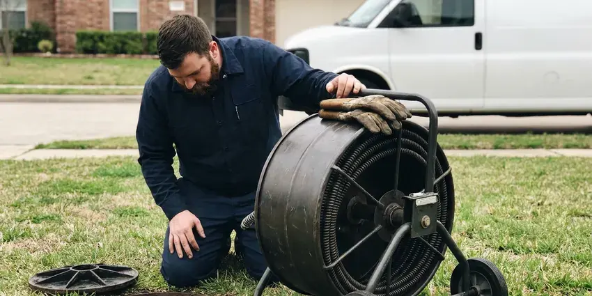

Water Leak Detection in Murrieta, CA
Water bill suddenly doubled in Murrieta, CA? FKM Plumbing tracks down where every gallon is going and fixes the leak at its source.
- Advanced Technology
- Upfront Pricing
- Advanced Leak Equipment
- Irrigation and Pool Checks

Professional Water Leak Detection Available Now in Murrieta, CA.
Every gallon matters, so we find the leak and help you keep it from coming back.
Water Leak Detection in Murrieta, CA That Explains Your High Water Bill
At FKM Plumbing, we understand the urgency of water leaks, especially where soil movement and foundation issues are common. We provide complete water leak detection in Murrieta, CA, using modern equipment for precise diagnosis and efficient repair plans.
Our expertise includes:
- Smart shutoff valves and leak sensors from Moen Flo and Phyn
- Meter flow testing and zone isolation for whole-property leak checks
- Pinhole leak locating behind walls.

Additional Plumbing Maintenance Services in Murrieta, CA
Our maintenance and specialty plumbing services in Murrieta, CA protect your home year-round and extend the life of every system.


Customers
Why Choose FKM Plumbing for Water Leak Detection in Murrieta, CA?
Soil conditions and humidity can make leak-related issues worse, so timely detection is critical. We focus on pinpointing the exact source to prevent further complications.
- Water Bill Savings, Even small, unnoticed leaks can significantly increase your monthly water expenses.
- Mold Prevention, Persistent moisture from leaks creates perfect conditions for hazardous mold growth.
- Transparent Pricing, You'll receive a written, upfront estimate before any work begins, with no hidden fees for our detection services.
Citywide Coverage
We offer water leak detection to homes and businesses throughout Murrieta, from large irrigated lots to compact townhomes. Every technician carries meter testing, acoustic and thermal equipment.
Experienced Team
Our team understands how local homes use water, including summer irrigation and pool top-offs. That context helps them separate normal use from a true leak.
Safety-First Approach
At FKM Plumbing, safety and code compliance are paramount in all our water leak detection work. We make sure all detection methods are non-invasive and that any subsequent repairs meet Southern California plumbing codes and standards.
Trusted Certified Murrieta Plumbing Services Professionals
At FKM Plumbing, we take pride in providing licensed, certified plumbing services throughout Murrieta, CA. Backed by leading industry credentials, our experienced plumbers combine technical skill with genuine customer care. Whether it is repair, installation, or maintenance, we follow strict safety and quality standards to deliver lasting results you can trust.
Call Us Now PHCC Plumbing Contractor Recognition
PHCC Plumbing Contractor Recognition Better Business Bureau (BBB) Accreditation
Better Business Bureau (BBB) Accreditation Angi Certified Pro
Angi Certified Pro ISO 9001 Quality Management Certification
ISO 9001 Quality Management CertificationReliable Water Leak Detection Services in Murrieta, CA
Preventative Leak Inspections in Murrieta, CA
Beyond emergency detection, FKM Plumbing offers preventative leak inspections to identify potential problems before they become major issues. This service is particularly valuable for older homes in Murrieta with aging plumbing systems. We conduct thorough checks of visible and accessible pipes, connections and fixtures, looking for early signs of corrosion or wear. A proactive approach to leak detection can save homeowners significant money and hassle in the long run, extending the life of your plumbing system in Southern California.

Slab Leak Detection in Murrieta
Slab leaks are common in homes on shifting soil and moving foundations. These leaks occur in pipes beneath your concrete slab, often indicated by warm spots on the floor, sudden spikes in your water bill or the sound of running water when all fixtures are off. FKM Plumbing uses dedicated acoustic listening devices and thermal imaging cameras to precisely locate these hidden leaks without destructive guesswork. Early detection is essential to preventing major foundation damage.
Water Heater and Softener Leak Detection in Murrieta
Water heaters and softeners can leak at fittings, valves and drain lines. A softener stuck in regeneration can send water down the drain nonstop, and a dripping relief valve on a water heater wastes water too. We check these units carefully and repair or replace failed parts. That often explains a mystery bill in homes that have water softeners.
Emergency Water Leak Detection in Murrieta, CA
Some leaks require urgent attention, particularly those causing significant water damage or posing a threat to your property's stability. FKM Plumbing provides emergency water leak detection services throughout Murrieta, CA, offering prompt response to urgent situations. Our goal is to quickly find and contain the leak to prevent further damage and begin the necessary repairs as soon as possible, day or night.
Advanced Leak Detection Technology in Murrieta
FKM Plumbing invests in modern leak detection technology to provide the most accurate and non-invasive service possible in Murrieta. This includes high-resolution thermal cameras for detecting temperature changes caused by hidden moisture, sensitive acoustic sensors that listen for the faint sounds of escaping water, and video pipe inspection cameras for internal pipe diagnostics. These tools allow us to find leaks with little disruption to your property.
Toilet and Fixture Leak Detection in Murrieta, CA
Toilets are one of the most common sources of wasted water. A worn flapper or a fill valve that never shuts off can leak silently around the clock. We use dye tests to find leaking toilets and check faucets, showers and supply lines for drips. These fixes are usually quick and save water right away.
Main Service Line Leak Detection in Murrieta, CA
The line from the meter to your house carries full pressure and can leak underground for a long time. Wet soil, soft spots or unusually green patches of yard may be the only clues. We trace the line, listen for the leak and mark it for a targeted repair. Replacing old galvanized or polybutylene service lines is usually recommended.

Irrigation Leak Detection in Murrieta
Drip and sprinkler systems run underground across yards and often account for hidden water loss. Cracked tubing, broken emitters and stuck valves can waste huge amounts of water. We isolate the irrigation system, test each zone and trace leaking lines. Repairs restore proper watering for your landscape.
Water Leak Detection Near Me in Murrieta, CA
When your water bill spikes, you want quick answers from a team that is close by. Our technicians serve all of Murrieta and can usually test your system within a day. We arrive ready to find the leak and often repair it on the same visit.
Our team is always ready to travel to your location in Murrieta, so your water leak is addressed promptly and professionally. We pride ourselves on being the go-to plumbing company for reliable and efficient leak detection services for all residents near me.
FKM Plumbing at a Glance
- Licensed and insured plumbers serving Murrieta, CA
- Same-day appointments and 24/7 emergency response
- Clear written estimates, no hidden fees
- 4.8-star rated by 754+ Southern California customers
Murrieta Map
Murrieta Information
- Population
- 111,878
- Area codes
- 951/760/909
- Service area
- Murrieta and communities within 40 miles
- Nearby
- Temecula, Menifee, Lake Elsinore, Perris
Effective water leak detection is crucial for homes in Murrieta, CA, where unnoticed leaks can saturate the soil, worsen foundation damage and drive up repair costs. Expansive clay and hillside soils can shift over time, putting stress on slab plumbing and cracking older sewer joints.
Expert Services
Trust our professionals for reliable FKM Plumbing solutions in Murrieta, CA.
Our Specialized Plumbing Services in Murrieta, CA
At FKM Plumbing, we provide a complete range of plumbing services across Murrieta, CA. From leak detection to full system installations, our team ensures fast, precise, and affordable service for both residential and commercial properties. Explore our core services below:


How Our Water Leak Detection Service Works in Murrieta, CA
At FKM Plumbing, we follow a clear, methodical process for water leak detection in Murrieta, CA. This means every potential leak source is investigated, leading to a precise and lasting solution.
Request a Quote
Call (213) 871-0701 and tell us about your water bill or what you have noticed. We schedule a visit and go over our detection fee up front.
Meter and Zone Tests
We check the meter flow rate and isolate the house, irrigation and pool to see which part is leaking. That focuses the search before we use locating tools.
Locate and Fix
We pinpoint the leak and explain repair options with prices. Most fixture and irrigation leaks can be repaired the same day.
Frequently Asked Questions About Water Leak Detection in Murrieta
Water leak detection in Murrieta usually costs $150 to $450, depending on property size and how many systems need testing. Repair costs vary based on what we find. We give you a price before we start.
For minor water leak repairs that don't involve significant alteration to the plumbing system, a permit is typically not required. However, for extensive pipe replacements, re-piping a section of your home or major slab leak repairs, a plumbing permit from the local building department may be necessary. Our team will explain any permit requirements.
Yes. A softener stuck in regeneration or with a faulty valve can send water down the drain continuously. We check softeners as part of our leak detection.
Most residential water leak detection services can be completed within 1 to 3 hours. More complex cases, such as multiple leaks or deep underground issues, might require additional time, but our goal is always efficient and accurate diagnosis.
Yes, a persistent water leak under your home can cause serious foundation damage. Expansive clay and hillside soils can shift over time, putting stress on slab plumbing and separating older sewer joints. Water saturates the soil, leading to expansion and contraction that can shift or crack your foundation, so slab leaks make prompt detection crucial.
While leak detection itself typically doesn't require a permit, extensive repairs involving opening walls, altering structural elements or replacing major sections of plumbing often do. FKM Plumbing will handle all necessary permit applications for any repair work we perform in Murrieta.
Common signs include a sudden, unusual increase in your water bill, the sound of running water when all fixtures are off, visible water stains on walls or ceilings, peeling paint, a musty odor or warm spots on your floor, especially near walls.
Yes. Repairs we complete carry a written workmanship warranty, and parts include manufacturer warranties. Smart valves also include their own coverage.
What People Are Saying About Our Plumbing Experts?

Sofia M.
Two new toilets installed in one visit, no mess left behind, and the tech even adjusted a faucet he noticed was dripping. Fair pricing and really friendly.
Toilet Installation · Menifee, CALaura S.
I scheduled a water heater replacement, and the team made the process smooth and affordable. The new unit works perfectly, and they cleaned up after completing the job.
Water Heater Replacement · Lake Elsinore, CA
Robert G.
The trenchless sewer replacement saved our front yard. They walked us through the camera inspection footage first so we knew exactly what we were paying for.
Sewer Line Replacement · Hemet, CA
Daniel K.
A pipe burst at 11 pm and they actually answered. The plumber showed up within the hour, shut everything down, and had us back to normal the next morning. Could not ask for more.
Emergency Plumbing · Temecula, CA
Emily R.
I called FKM Plumbing for plumbing repair, and the technician was fast, polite, and thorough. They explained the problem clearly and fixed it the same day. I will definitely hire them again. Highly recommended!
Plumbing Repair · Lake Elsinore, CAJames P.
Our commercial plumbing system had a leak under the sink, and FKM Plumbing handled it professionally. The plumbers arrived quickly and restored everything without disruption to our customers.
Commercial Plumbing · Hemet, CA